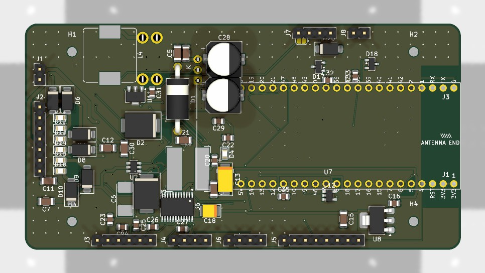
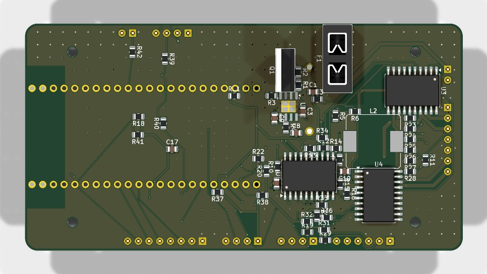

Носитель 104,0 × 54,0 мм · 2 слоя · 1,6 мм · R3 · сокет ESP32-S3-DevKitC-1 (44 контакта) · DRC 0/0 · ERC 0/0


| Параметр | Значение |
|---|---|
| Контур платы | 104,00 × 54,00 мм (со штрихом 104,10 × 54,10) |
| Толщина / слоёв меди | 1,60 мм / 2 (F.Cu, B.Cu) |
| Крепёж | 4 × NPTH Ø2,2 мм, сетка 81,5 × 40,5 |
| Корпус | GAINTA G308MF |
| Компонентов / площадок | 116 / 411 (98 сквозных + 309 SMD + 4 NPTH) |
| Дорожек / переходов | 906 отрезков / 283 перехода (медь 2020,33 мм) |
| Медиана отрезка | 1,2074 мм |
| Производство | variants/esp32s3/production/ — 20 файлов |